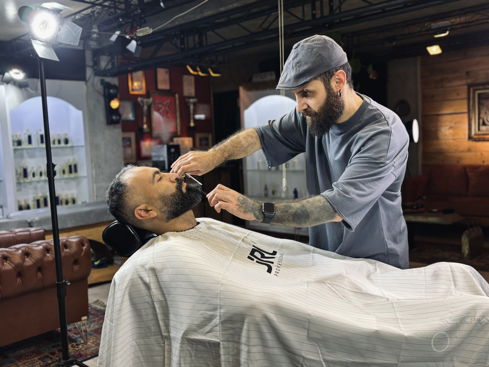
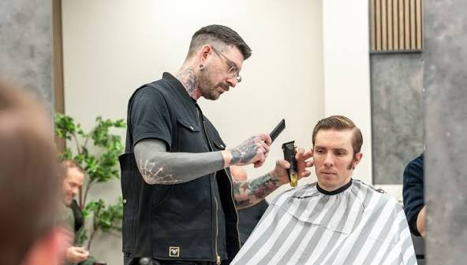

Mission
To provide skilled, reliable grooming that helps every client look and feel their best.
Bilal Panoli Salon started as an independently owned barbershop offering traditional and modern grooming to men in the local community. Built on word-of-mouth and repeat custom, we have grown a loyal client base without ever having a website — until now.
To provide skilled, reliable grooming that helps every client look and feel their best.
To become the local barbershop of choice for quality and a welcoming client experience.

Owner & Head Barber — over 12 years of experience in traditional and modern cuts.

Specialist in fades, beard shaping and hot towel shaves.
We welcome men aged 16–55 from the surrounding community, including professionals and students who need regular haircuts, beard trims and shaves.
Walk-ins are always welcome, but booking online guarantees your slot and avoids any wait, especially on Saturdays.
Just give us a call or WhatsApp message at least 2 hours before your appointment and we'll happily move it to another time.
Yes — we offer a dedicated kids haircut service for children under 12. See our Services page for pricing.
Yes, both the City Centre and Suburb Mall branches have free customer parking right outside.